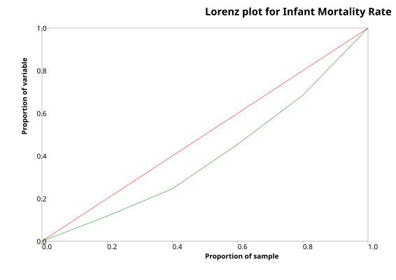

Gini Coefficient of Inequality
Menu location: Analysis_Nonparametric_Gini Coefficient of Inequality
This method calculates the Gini coefficient (G) of inequality with bootstrap confidence intervals. A Lorenz plot is produced when a single variable is specified for analysis, otherwise the summary statistics alone are displayed for a group of variables.
The Gini coefficient was developed by the Italian Statistician Corrado Gini (Gini, 1912) as a summary measure of income inequality in society. It is usually associated with the plot of wealth concentration introduced a few years earlier by Max Lorenz (Lorenz, 1905). Since these measures were introduced, they have been applied to topics other than income and wealth, but mostly within Economics (Cowell, 1995, 2011; Jenkins, 1991; Sen, 1973).
G is a measure of inequality, defined as the mean of absolute differences between all pairs of individuals for some measure. The minimum value is 0 when all measurements are equal and the theoretical maximum is 1 for an infinitely large set of observations where all measurements but one has a value of 0, which is the ultimate inequality (Stuart and Ord, 1994).
When G is based on the Lorenz curve of income distribution, it can be interpreted as the expected income gap between two individuals randomly selected from the population (Sen, 1973).
The classical definition of G appears in the notation of the theory of relative mean difference:
- where x is an observed value, n is the number of values observed and x bar is the mean value.
If the x values are first placed in ascending order, such that each x has rank i, the some of the comparisons above can be avoided and computation is quicker:
- where x is an observed value, n is the number of values observed and i is the rank of values in ascending order.
Note that only positive non-zero values are used.
The small sample variance properties of G are not known, and large sample approximations to the variance of G are poor (Mills and Zandvakili, 1997; Glasser, 1962; Dixon et al., 1987), therefore confidence intervals are calculated via bootstrap re-sampling methods (Efron and Tibshirani, 1997).
StatsDirect calculates two types of bootstrap confidence intervals, these are percentile and bias-corrected (Mills and Zandvakili, 1997; Dixon et al., 1987; Efron and Tibshirani, 1997). The bias-corrected intervals are most appropriate for most applications.
In order for G to be an unbiased estimate of the true population value, it should be multiplied by n/(n-1) (Dixon, 1987; Mills and Zandvakili, 1997). This corrected form of G does not appear most literature, but there are few situations when it is not the most appropriate form to use.
In the context of measuring inequalities in health, Brown (1994) presents a Gini-style index, seemingly calculated from two variables instead of one. The two variables comprise distinct indicators of health (y, e.g. infant deaths) and population (x, live births) for n groups sorted by a composite measure of health and population (e.g. infant mortality rate).
Gb based on two variables (e.g. infant deaths and live births) will be very similar to G calculated from a composite measure (e.g. infant mortality rate). In most situations it is more natural to think of inequality of the composite measure. Another reason not to use Gb is that its statistical characteristics are not well studied.
StatsDirect does not provide a separate function to handle distinct health and population variables when calculating Gini coefficients, instead you should use the single composite health/population measure.
The Pan American Health Organisation (2001) gave the following illustration:
| Country | GNP per capita | infant mortality rate (IMR) | live births | infant deaths |
| Bolivia | 2860 | 59 | 250 | 14750 |
| Peru | 4410 | 43 | 621 | 26703 |
| Ecuador | 4730 | 39 | 308 | 12012 |
| Colombia | 6720 | 24 | 889 | 21336 |
| Venezuela | 8130 | 22 | 568 | 12496 |
To analyse these data in StatsDirect open the test workbook using the file open function of the file menu, then select Gini Coefficient of Inequality from the Nonparametric section of the Analysis menu. Select the column marked "Infant Mortality Rate (IMR)" when prompted for data, skip the frequency weights, and enter 2000 bootstrap replications to match the figures below (the default is 100,000).
For this example:
Gini coefficient of inequality
Analysis for Infant Mortality Rate (IMR):
Positive non-zero observations = 5
Variance coefficient = 0.404884
Re-samples = 2000
Bias = 0.039481
Standard error (bootstrap) = 0.046904
Gini coefficient = 0.19893
Percentile 95% CI = 0.058182 to 0.22619
BCa 95% CI = 0.111628 to 0.23871
Unbiased estimator of population Gini coefficient = 0.248663
Percentile 95% CI = 0.072727 to 0.282738
BCa 95% CI = 0.139535 to 0.298387

The bias, standard error and confidence limits come from random re-samples, so they differ a little each time the analysis is run. Brown's Gb = 0.1904 for these data, from the live births and infant deaths. This example uses too few groups for reliable inference from G.
Technical notes
The percentile confidence interval is defined as:
- where g* is a Gini coefficient estimated from a bootstrap sample and a is (100-confidence level)/100.
A re-sample whose coefficient equals G is not counted in z0 (Efron and Tibshirani 1993; the boot package in R counts the same way). When no re-sample lies below G, or every one does, z0 is infinite and the BCa interval is reported as not defined.
The bias-corrected and accelerated (BCa) confidence interval is defined as:
- where g* is a Gini coefficient estimated from a bootstrap sample, G is the observed Gini coefficient, g(i) is the Gini coefficient with the ith observation left out and ḡ(·) is the mean of these jackknife values (a is the acceleration), α is (100-confidence level)/100, ϕ is the standard normal distribution and k is the number of re-samples in the bootstrap.
This R code reproduces the example above. It uses the boot package, which comes with R, and was checked with R 4.6.1. Paste it into R, or save it as a script and run it.
# Gini coefficient of inequality: the StatsDirect help example (Pan American
# Health Organisation 2001, infant mortality in five countries) in R
imr <- c(59, 43, 39, 24, 22) # infant deaths per 1000 live births
n <- length(imr)
# The Gini coefficient from the values in ascending order (the argument i lets
# boot() below pass in a re-sample)
gini <- function(x, i = seq_along(x)) {
x <- sort(x[i])
n <- length(x)
sum((2 * seq_len(n) - n - 1) * x) / (n * sum(x))
}
G <- gini(imr)
six <- function(x) formatC(x, digits = 6, format = "f", drop0trailing = TRUE)
cat("Positive non-zero observations =", n, "\n")
cat("Variance coefficient =", six(sd(imr) / mean(imr)), "\n")
cat("Gini coefficient =", six(G), "\n")
cat("Unbiased estimator of population Gini coefficient =", six(G * n / (n - 1)), "\n")
# Bootstrap confidence intervals with the boot package, which comes with R: 2000
# re-samples as in the example (StatsDirect's default is 100,000). The limits
# depend on the random re-samples, so they differ a little from run to run and
# from StatsDirect's. R's bias is the mean re-sampled coefficient less G, the
# opposite way round to StatsDirect's. The BCa interval is given the jackknife
# influence values, so its acceleration is the one StatsDirect uses (Efron and
# Tibshirani 1993). With so few values R warns that the BCa limits are unstable.
library(boot)
set.seed(2001)
b <- boot(imr, gini, R = 2000)
cat("Re-samples =", b$R, "\n")
print(b)
ci <- boot.ci(b, type = c("perc", "bca"), L = empinf(b, type = "jack"))
print(ci)
# StatsDirect multiplies the limits, like the coefficient, by n / (n - 1) for the
# unbiased estimator
cat("Unbiased percentile 95% CI =", six(ci$percent[4] * n / (n - 1)), "to",
six(ci$percent[5] * n / (n - 1)), "\n")
cat("Unbiased BCa 95% CI =", six(ci$bca[4] * n / (n - 1)), "to",
six(ci$bca[5] * n / (n - 1)), "\n")
# Brown's (1994) index from the two components, live births and infant deaths,
# with the countries in ascending order of the rate
births <- c(250, 621, 308, 889, 568)
deaths <- c(14750, 26703, 12012, 21336, 12496)
o <- order(imr)
X <- c(0, cumsum(births[o]) / sum(births))
Y <- c(0, cumsum(deaths[o]) / sum(deaths))
gb <- 1 - sum((Y[-1] + Y[-(n + 1)]) * (X[-1] - X[-(n + 1)]))
cat("Brown's G b =", formatC(gb, digits = 4, format = "f"), "\n")
# The Lorenz plot at the end of the report: the cumulative share of the variable
# against the cumulative share of the sample (green), with the line of equality
# (red)
x <- sort(imr)
plot(c(0, seq_len(n) / n), c(0, cumsum(x) / sum(x)), type = "b", col = "green",
xlim = c(0, 1), ylim = c(0, 1), xlab = "Proportion of sample",
ylab = "Proportion of variable")
abline(0, 1, col = "red")